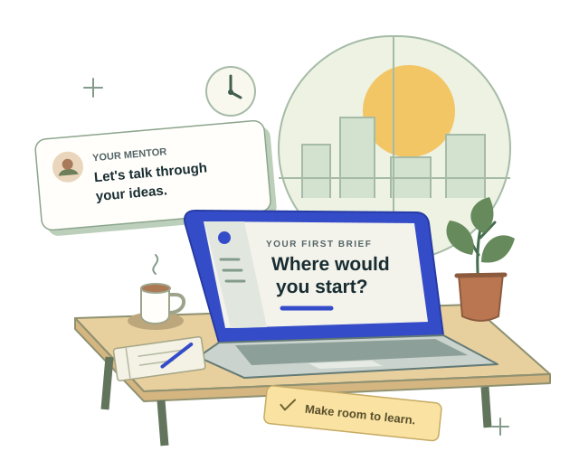

Your workstation
WorkReady
Your home for the placement. Find your inboxes, interviews, work tasks, colleague chats and feedback in one place.
Sign in with a lecturer-issued access code.
Open the student portalA rehearsal for working life
Practise an internship before the real thing. Apply for a role, meet your mentor, tackle a task and find your place in a team of fictional colleagues.
Have an access code? Head to WorkReady.
Just exploring? The primer is open to everyone.

An educational simulation.
A whole working world to explore.
The experience
WorkReady follows the whole placement. The work, the feedback and the everyday conversations all have a part in the story.
Explore the job board. Research an employer and decide where you could fit.
Apply with a synthetic resume and cover letter. Read the feedback on your application.
Practise a typed hiring interview and explain how you would approach the role.
Take on mentor briefs, submit your work and use feedback to improve your next attempt.
Ask a colleague a question, write a work message and take part in a team lunch.
Reflect with HR on what you tried, what you learned and what you would do differently.
Tasks, coaching and social moments overlap during placement. Progress and timing depend on the scenario and your choices.
Find your starting point
Your home for the placement. Find your inboxes, interviews, work tasks, colleague chats and feedback in one place.
Sign in with a lecturer-issued access code.
Open the student portalPlay a branching introduction to working life. Make a choice, see what follows and explore the alternative.
No code needed. Replay in a different tone.
Try the primerA fictional job board connecting the six employers. Browse roles, read the requirements and prepare an application.
Browse freely. An access code is needed to apply.
Browse the job boardMeet the workplaces
Each fictional organisation has its own website, colleagues and workplace context. Look around before you apply.
Investigate security problems, explain technical ideas and support the clients who depend on them.
Explore operations, safety and the decisions that connect a resources business with its communities.
Make sense of a client brief, develop recommendations and communicate your reasoning clearly.
Work through community needs, public processes and stakeholder decisions in a fictional Western Australian council.
Practise careful analysis and client communication in a workplace shaped by trust and responsibility.
Explore community programs, grants and volunteer support where the work starts with a social purpose.
All organisations, roles and workplace policies are fictional teaching material. These sites do not advertise real vacancies.
For educators
Use WorkReady to prompt discussion about applying, communicating and learning at work. Review the student's journey alongside their own reflection.
Read the educator & operator guidesWorkshop, semester and custom presets adjust timing. Actual duration depends on the scenario, configuration and student activity.
Pacing and content settingsThe local lecturer console supports access codes and journey reports. Feedback is formative evidence; the system does not award an automatic final grade.
Lecturer console guideThe simulation supports stub responses and configured local or cloud models. The primer is an authored story. Check the setup before using it with a class.
How WorkReady fits togetherBefore you begin
Choose an invented persona and a synthetic resume. WorkReady saves simulation activity for learning and lecturer review. Contact filtering can miss identifying details, and selected cloud providers receive prompts.
Read the student data-handling guideYou can explore the primer, job board and public company pages without one. To apply or use the student workstation, ask your lecturer or facilitator for an issued contractor code. You may need to enter it separately on different sites.
If you are new to WorkReady, try the primer. It introduces the journey through choices and alternative outcomes. If your lecturer has given you an access code and instructions, open the student portal.
No. It is a standalone introduction. Finishing the story does not complete or update a placement in the WorkReady API.
The project is open source under the MIT License. Start with the project repository and operations guide. Running the full simulation needs the API, content and deployment configuration as well as these static sites.
Take the next step